チュートリアル一覧に戻る : Oracle Cloud Infrastructure チュートリアル
OCIのコンソール画面はWebブラウザでGUI操作ができて便利ですが、時にはコマンドラインで操作したい場合もあります。そんな時に別途パソコン上のターミナルソフトウェアを起動してコマンド操作するのではなく、ブラウザのコンソール画面の中でコマンド操作ができるととても便利です。
クラウド・シェル（Cloud Shell）は、OCIコンソールの中で利用できるWebブラウザベースのターミナルの機能です。OCIテナンシ内の各ユーザにLinuxのBashシェル実行ができる環境が提供され、無償で利用できます。
また、クラウド・シェルではOCIコマンドライン・インタフェース(CLI)の最新バージョンやそのほかの便利なツールがデプロイ済みですぐに使えるようになっています。ユーザごとに5GBのディレクトリが付属しているので、コンソールを閉じても次回再度起動すれば同じディレクトリを利用できます。
このチュートリアルでは、クラウド・シェルの起動と各種ネットワークのモードの利用方法、また、OCI CLIとインスタンスへのssh接続を試します。
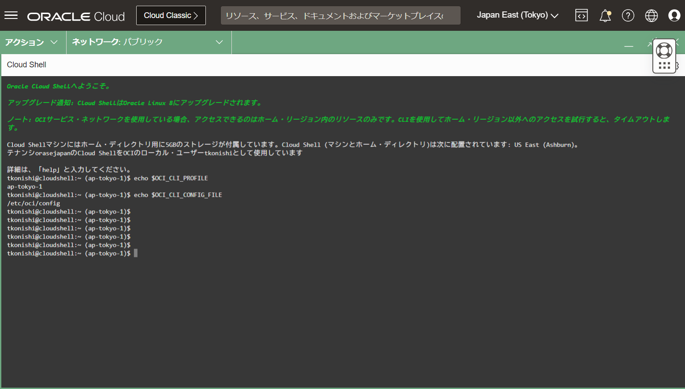
所要時間 : 作業時間 約30分
前提条件 :
- チュートリアル入門編（その2）- クラウドに仮想ネットワーク(VCN)を作るを通じてVCNの作成が完了しており、そのVCN内にデフォルトのプライベート・サブネットとパブリック・サブネットが作成されていること。
- チュートリアル入門編（その3）- インスタンスを作成する を通じてコンピュート・インスタンスの作成が完了していること。
注意 : チュートリアル内の画面ショットについては、現在のコンソール画面と異なっている場合があります
目次 :
- 事前要件の確認
- クラウド・シェルの起動
- OCI CLIの実行
- ファイルのアップロード
- パブリック・サブネットのコンピュート・インスタンスへのssh接続
- プライベート・サブネットのコンピュート・インスタンスへのssh接続
1. IAMポリシーの確認
操作ユーザーがAdministratorsグループに所属している、あるいはテナンシの管理者権限を持つ場合は特に追加の設定は不要です。それ以外の場合は、以下のポリシーを設定してください。これらのポリシーはコンパートメントではなくテナンシレベルでの設定（in tenancy）が必要なため、rootコンパートメントに配置してください。
- クラウド・シェルを利用するためのポリシー
allow group <GROUP-NAME> to use cloud-shell in tenancy
- クラウド・シェルのパブリック・ネットワーク・アクセスを利用するためのポリシー
allow group <GROUP-NAME> to use cloud-shell-public-network in tenancy
2. クラウド・シェルの起動
-
コンソール画面右上のアイコンの中から
開発者ツールのアイコンにカーソルを置き、表示されたメニューからCloud Shellをクリックします。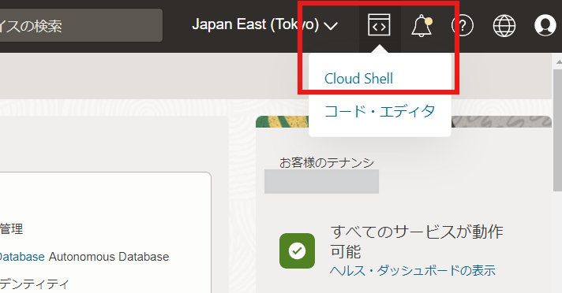 -
（注：2024年10月現在）初回起動時に「ARM（aarch64）インスタンスが使用可能になりました」というお知らせのポップアップが表示されますが、そのまま閉じるをクリックしてください。 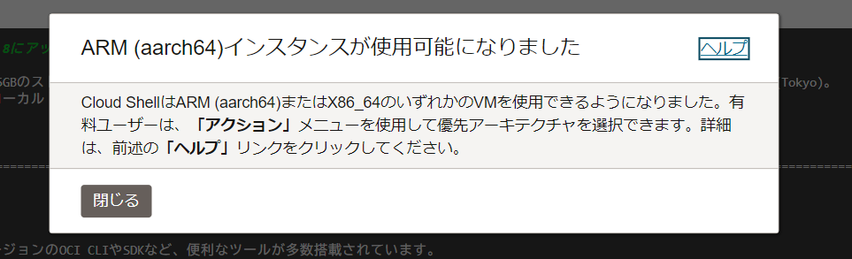
-
コンソール画面の下半分にCloud Shellが起動してきます。初回起動時にはチュートリアルを実行するかどうかを聞かれますので、ここでは「N」を入力します。（Yを入力するとCloud Shellの機能を一通り確認することもできます。）
二回目以降にCloud Shellを起動した場合はチュートリアルはスキップされます。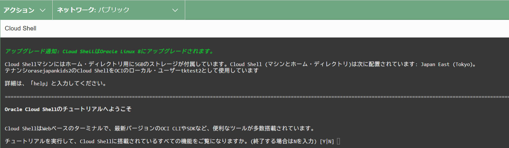
-
クラウド・シェルの左上の
ネットワークのプルダウンメニューを開きます。のちほどインスタンスのパブリックIPアドレス宛にssh接続を試したいので、ネットワークのモードとしてパブリックが選択されていることを確認します。それ以外のモードが選択されている場合は、パブリックを選択してください。 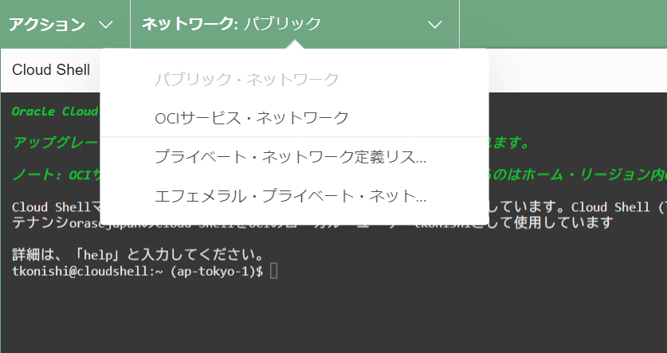 -
クラウド・シェルのバーの右上の斜めの矢印のアイコンをクリックしてみましょう。ウィンドウがコンソール内で最大化されます。クラウド・シェルを大きく表示したい場合は最大化し、コンソール画面も同時に参照したいような場合は画面下半分にリストアしましょう。邪魔な場合は最小化アイコンでコンソールの一番下に最小化しておくこともできます。 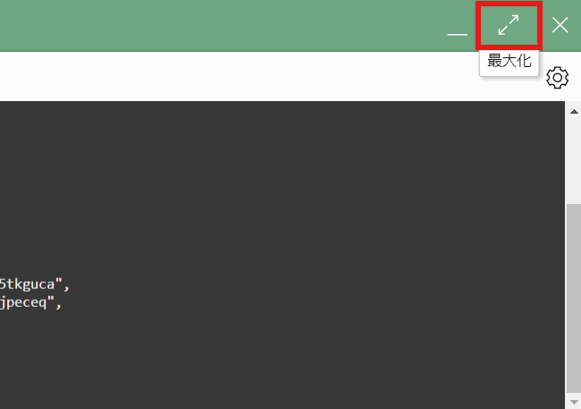
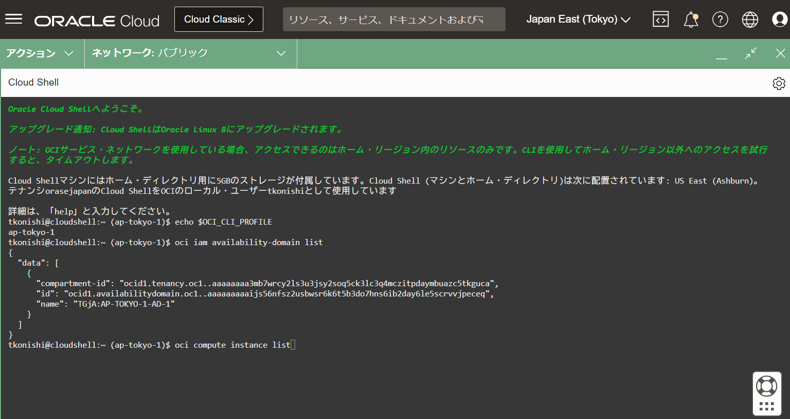
-
これでクラウド・シェルの起動は完了です。クラウド・シェルにはホーム・ディレクトリ用に5GBのストレージが付属していますが、6か月を超えてクラウド・シェルを起動していない場合は、その後60日以内にこのストレージ領域は削除されますのでご注意ください。
3. OCI CLIの実行
続いて、クラウド・シェル上でOCI CLIを実行してみます。クラウド・シェルではあらかじめOCI CLIはインストール済みでコンソールにログインしたユーザとしての認証が済んでいる状態なので、APIキーの登録やOCI CLIの初期セットアップなどは不要です。
-
クラウド・シェルで以下のコマンドを実行します。帰ってくる結果と同じ識別子がクラウドシェルのプロンプトにも表示されています。これはコンソール右上のリージョン選択で選択されているリージョンと同じリージョンになります。この場合ap-tokyo-1が表示されているため、これからこのクラウド・シェルのセッションで実行するコマンドはap-tokyo-1のリージョンのサービスに対して発行されることになります。 もしほかのリージョン宛てにCLIを実行したい場合は、コンソールのリージョン選択をしなおしてから、クラウド・シェルのセッションを再起動してください。
echo $OCI_CLI_PROFILE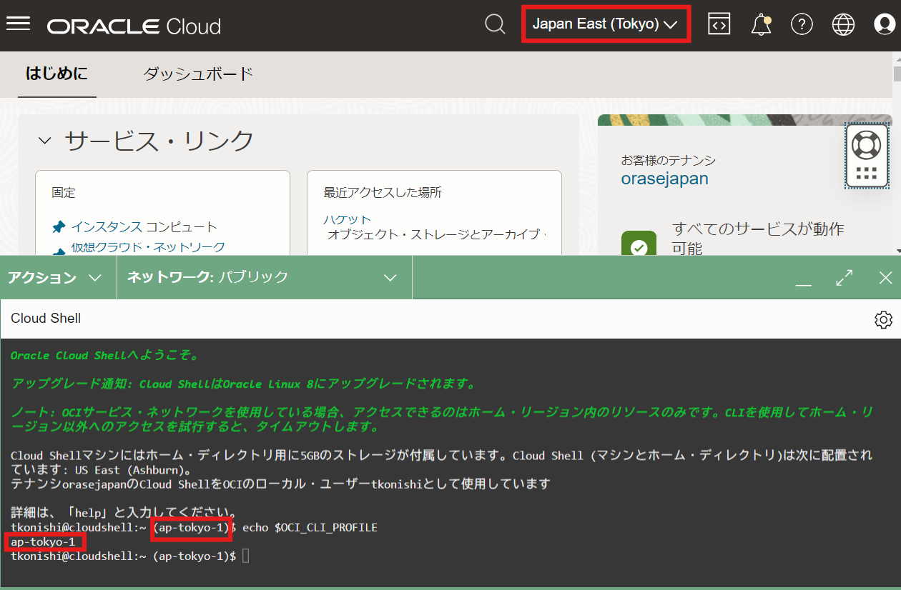
-
以下のOCI CLIコマンドを実行します。特にセットアップ作業は不要でコマンドが実行可能であることが分かります。
oci iam availability-domain list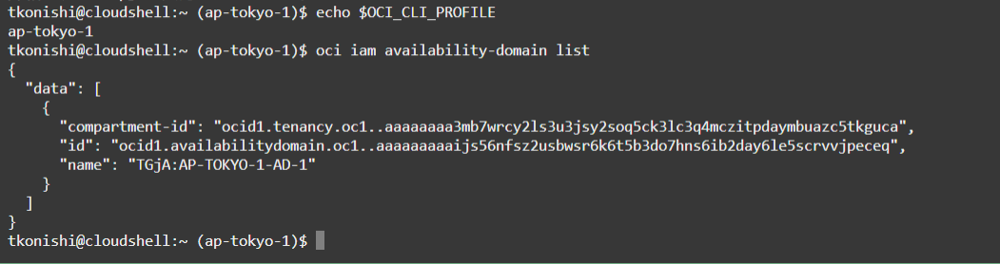
-
続いて、あらかじめ作成されているコンピュート・インスタンスが配置されているコンパートメントのOCIDを確認します。わからない場合は、メニュー→
アイデンティティとセキュリティ→コンパートメントのページから対象のコンパートメントのOCIDを確認します。 -
以下のOCI CLIコマンドを実行します。このコンパートメントに現在存在しているコンピュート・インスタンスの名前とステータスを表示します。
oci compute instance list --compartment-id <コンパートメントのOCID> --query "data[].[\"display-name\",\"lifecycle-state\"]"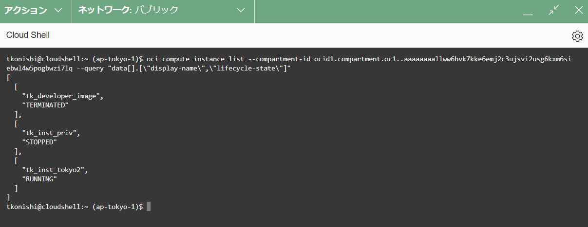
4. ファイルのアップロード
続いて、クラウド・シェル上にファイルをアップロードします。ここでは、インタンスのOSログインのためのsshキーをクラウド・シェル上にアップロードします。
-
クラウド・シェルの右上の歯車のアイコンにカーソルを置き、
アップロードのメニューをクリックします。 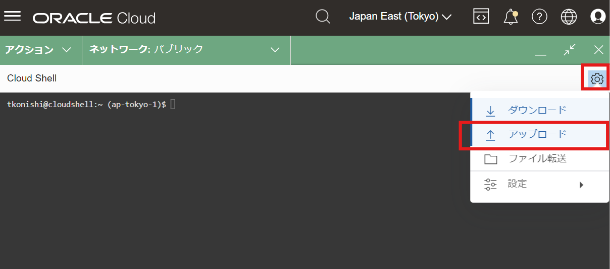 -
インスタンスのsshキーの秘密鍵をアップロードします。表示されたポップアップウィンドウにファイルをドラック・アンド・ドロップするか、「コンピュータから選択」をクリックして対象のファイルを選択し、
アップロードボタンをクリックします。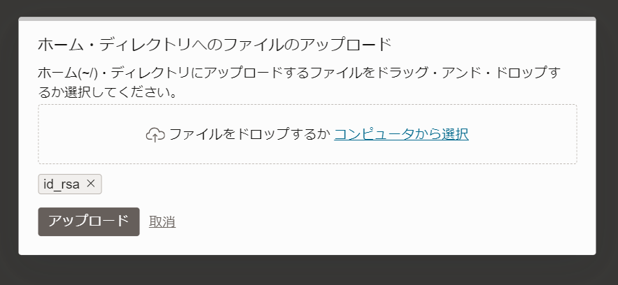
-
アップロードが完了するとファイル転送のウィンドウに
完了済と表示されます。このウィンドウは非表示リンクから閉じてしまって問題ないです。 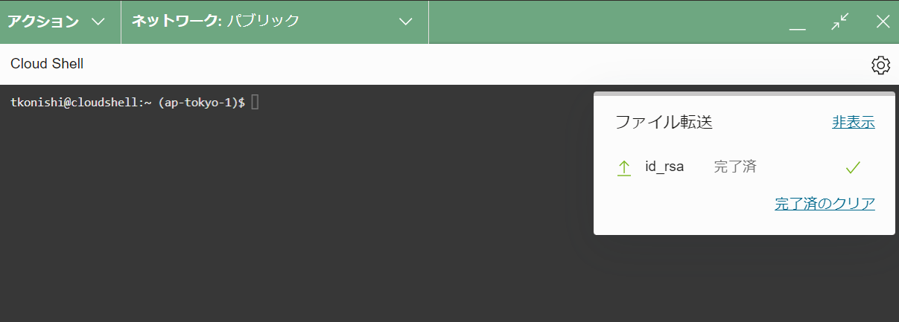 -
秘密鍵のファイルがアップロードできたら、sshで利用するために以下のコマンドでファイルの権限を修正します。
chmod 600 <ファイル名>修正後に以下のコマンドで確認し、権限が -rw——- になっていれば問題ありません。
id -l <ファイル名>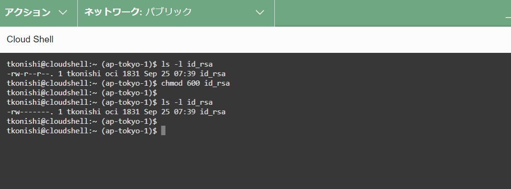
4. パブリック・サブネットのインスタンスへのssh接続
続いて、パブリック・サブネットに配置されたコンピュート・インスタンスのパブリックIPアドレス宛にssh接続を行います。パブリックIPアドレスに接続するためには、クラウド・シェルのネットワーク・モードは「パブリック」になっている必要があります。
-
コンピュート・インスタンスのパブリックIPアドレスが分からない場合は、コンソール画面のコンピュート→インスタンス→インスタンスの詳細画面から確認してください。 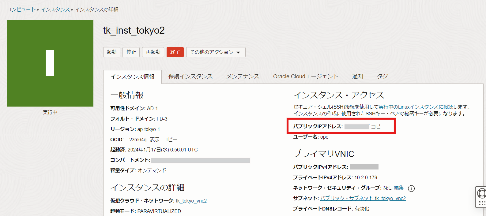
-
クラウド・シェルのネットワーク・モードが「パブリック」になっていることを確認し、以下のコマンドでssh接続を行います。
ssh -i <秘密鍵ファイル> opc@<上記手順で確認したパブリックIPアドレス>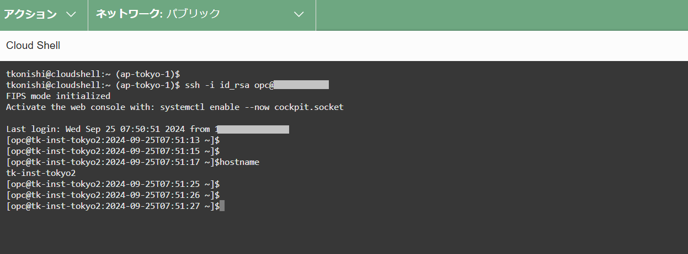
クラウド・シェルからインスタンスにssh接続できました。
5. プライベート・サブネットのインスタンスへのssh接続
続いて、プライベート・サブネットに配置したコンピュート・インスタンスのプライベートIPアドレス宛にssh接続を行います。プライベート・ネットワークに接続するためには、「プライベート・ネットワーク・アクセス」のネットワーク・モードを利用する必要があります。また、プライベート・ネットワーク・アクセスはホーム・リージョンのみで利用可能です。
-
利用しているテナンシのホーム・リージョンで、VCNのプライベート・サブネットにインスタンスを用意します。この環境ではホーム・リージョンがUS East (Ashburn)となっています。 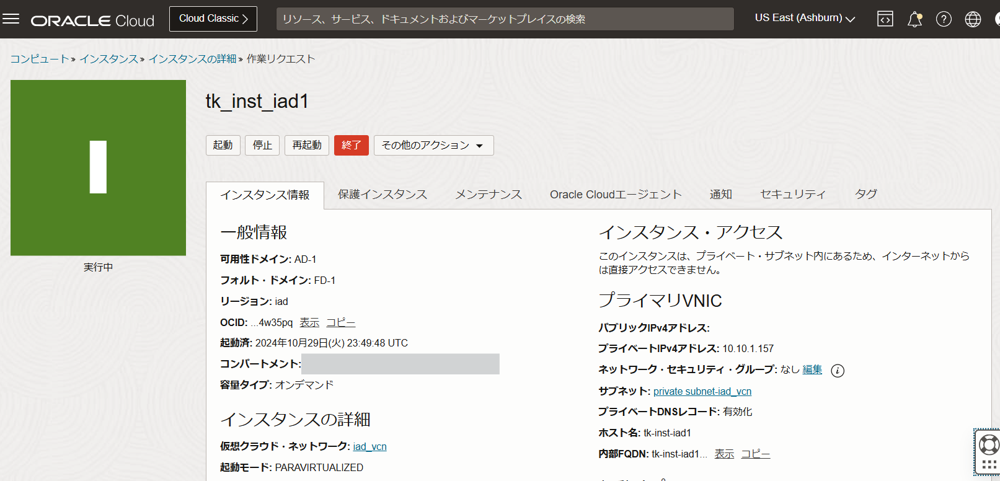
-
クラウド・シェルを起動し、ネットワーク・モードをプライベートに変更します。「ネットワーク」のプルダウンリストから「エフェメラル・プライベート・ネットワーク」を選択します。（今回のみ有効なプライベート・ネットワーク・アクセスとなります。永続的にプライベート・ネットワーク設定を保存したい場合は定義リストを作成する必要がありますが、今回は一度のみで構わないのでエフェメラルを選択します。） 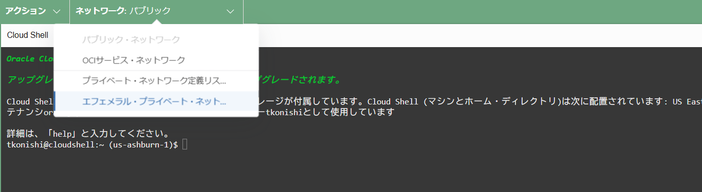
-
クラウドシェルの画面右側に「エフェメラル・プライベート・ネットワーク設定」の画面が開きます。以下の項目を入力して、「アクティブなネットワークとして使用する」をクリックします。
- VCN：インスタンスが配置されているVCNを選択
- サブネット：インスタンスが配置されているプライベート・サブネットを選択
- ネットワーク・セキュリティ・グループ（オプション）：特に設定なし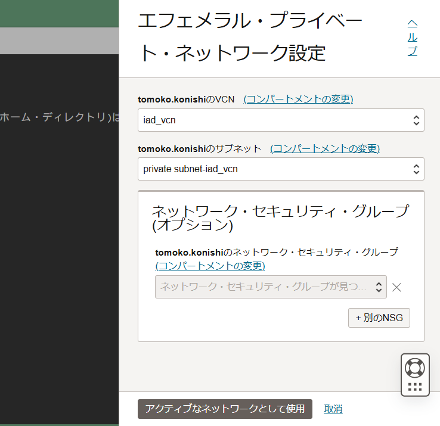
-
クラウド・シェル画面のネットワーク・モードの表示部分が「エフェメラル（接続中）」から「エフェメラル」となるまで少し待ちます。 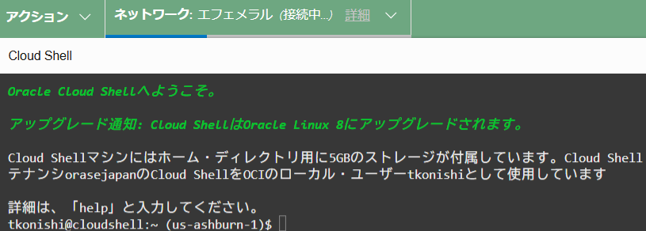 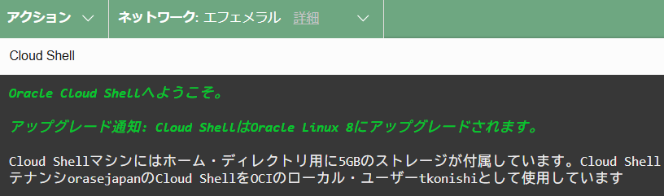
-
sshキーの配置は先ほどと同様の手順で実施しておきます。インスタンスのプライベートIP宛てにssh接続を行います。
ssh -i <秘密鍵ファイル> opc@<インスタンスのプライベートIPアドレス>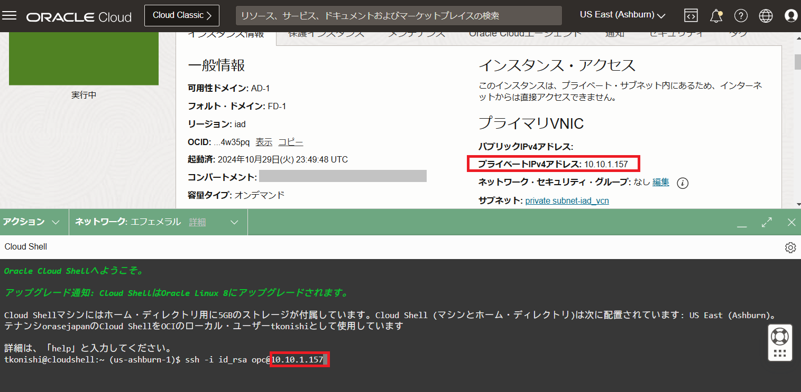
-
プライベート・サブネット内のインスタンスに接続ができました。 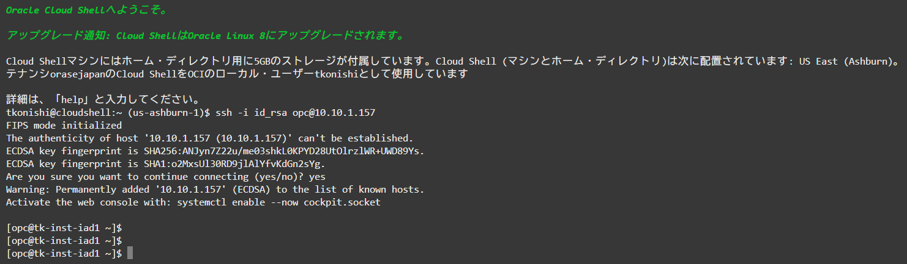
以上で、以下の点を試してみることができました。
- クラウド・シェルを利用すれば、特別な設定なしにコンソールにログインしたユーザの権限でOCI CLIでのコマンドライン操作が可能
- クラウド・シェルには5GBの永続ストレージ（6か月以上アクセスがない場合には削除される）が付属。ファイルをアップロードすることもできる。
- sshなどのOSコマンドを使用してインスタンスへの接続も可能。
- パブリック・ネットワーク・モードではパブリックIPに対して接続が可能。
- プライベート・ネットワーク・アクセス・モードでは、ホーム・リージョン内で、指定したプライベート・サブネット内のプライベートIPに対して接続が可能。
以上でこのチュートリアルは完了です。